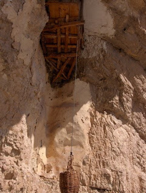

COOKING WITH ANISOARA: DESERT DIN BOSTAN "SOARELE "
- EGIPT: ?ara unde Soarele e frate cu de?ertul
EGIPT: ?ara unde Soarele e frate cu de?ertul. Luna de miere exoticã la Hurghada. Cei mai mul?i dintre români aleg sã-?i petreacã a?a zisa lunã de miere, care de cele mai multe ori se transfromã într-o sãptãmânã de concediu, cu harta în mânã. - Omul deşert | Viata ca un drog
Soarele şi luna …baladă populară culeasă de Gh. Dem. Teodorescu. Foaie de cicoare, În prunduţ de mare Iată că-mi răsare Puternicul Soare. Dar el nu-mi răsare, Ci va să se-nsoare; Că mi-a tot umblat Lumea-n lung şi-n lat, - Soarele | B.D.C
Soarele-mi vedea Şi îmărmurea, Şi se văieta, Năvodari chema, Năvod aducea Şi-n mare-l băga; Mulţi galbeni că da Să-i scoaţă dalba. Luptă ce-mi lupta În deşert erea, Că ei n-o găsea Şi n-o mai prindea; Făr' de... ce-mi scotea Şi-n năvod trăgea? O mreană de mare Cu solzii de zare. Pe mal d-o scotea, Pe mal d-o zvârlea, - Locul unde Soarele nu creează nicio umbră. Cum este ...
Virusologii au descoperit că razele ultraviolete (UV) pot distruge 90% dintr-o suprafață contaminată cu noul coronavirus, în aproximativ 30 minute, după ce o persoană infectată a strănutat sau a tușit acolo.. Studii separate au concluzionat că soarele poate distruge aproape în totalitate particulele de virus din aer în doar șase minute. - Soarele şi luna - Povesti Nemuritoare
Meditaţii în deşert care te pot bulversa psihic. În jurul meu nu este nici măcar o umbră. Nimic care să schimbe culoarea nisipului fierbinte. Aici, duşman îţi este soarele ce arde cu o intensitate incredibilă. Dușman îți este și vântul singuratic din deşert. El este compozitorul ce născoceşte muzica turbată. - Soarele poate distruge coronavirusul în 30 de minute ...
Oraşul e acum deşert sărăcăcios Iar soarele dispare ros de vină. În dansul şui al torţei dezlânate, Întreg Egiptul se animă în pereţi. Sub mâini de sclavi cad spicele înalte În cântul-rugă îngânat de cântăreţi Şi ziduri grele se despincă-n văl de fum Stânci risipite din nisipuri se adună, Se rânduiesc palate ... - „Soarele” – Tarta apetisantă din brânză de vaci şi ...
Download-uri Poze : om, natură, pădure, siluetă, Munte, deşert, umbră, întuneric, negru, artă, american, fundal, Curcan, hd, cowboy turci 2448x2448,1069612 - Soarele în citate, maxime, aforisme - diane.ro
Soarele şi luna A mai mitică, Ca o floricică, În mijloc şedea, La lucru lucra, Pe toate-ntrecea; Că ea tot ţesea. Ţesea, -nchindisea, Şi ea se numea Ileana Simzeana, Doamna florilor Ş-a garoafelor, Sora Soarelui, Spuma laptelui. Soare răsărea, Şi Soare-mi venea La gură d-argea. Cu dânsa vorbea, Frumos c-o-ntreba, Din gură-i zicea: - Soarele şi luna - versuri Balade Populare | Versuri.ro
Vector imagine de soarele străluceşte peste munte stânci. ... Soare în deşert. Vectorii sponsorizate . Descarcă . Descriere . Vector imagine de soarele străluceşte peste munte stânci. Categorii. Fundaluri. Licență . Politica de confiden?ialitate . Specificații. 0.58 MB. 2018-06-19 . - Reteta Desert cu bostan "Soarele" - Bucataras.RO
3. Se racesc . Intre timp se curata de coarja portocala in forma de spirala cu un cutit ingust si foarte bine ascutit. Coaja taiata de portocala se inroleaza in forma de floare si se prinde cu o scobitoare.
Pagini
ACASA CATEGORII RETETEDESERT DIN BOSTAN "SOARELE "
Este un desert foarte gustos si sanatos,si se poate servi in zilele de post .Ingrediente :
300 gr de bostan sau zamos o portocala mare 3 nuci pisate 2 linguri mare de miere de albina pomusoare uscate 30 grame de unt sau ulei fara miros 1. Se curata de coaja bostanul. Se taie in felii de grosimea 0.6-0.9 см 2. Se prajesc feliile de bostan pe tigaie la un foc domol pe o parte si alta timp de 4-5 minute. 3. Se racesc . Intre timp se curata de coarja portocala in forma de spirala cu un cutit ingust si foarte bine ascutit. Coaja taiata de portocala se inroleaza in forma de floare si se prinde cu o scobitoare. Se pune intr-un vas cu apa rece. Asa floare se poate pastra in apa rece pina la 2 zile . 4. Se taie o jumatate de portocala in felii si se aranjeaza pe un platou.Deasupra se repartizeaza feliile de bostan coapte . Din cealalata jumatate de portocala se scurje sucul peste feliile de bostan se lasa pe 15 minute sa se imbibe sucul de portocala in bostanul prajit. 5. Se presara cu nuca pisata si pomusoare .In microunda se incalzeste mierea de albina si se stropeste deasupra. 6. Se serveste la masa dupa o ora, pentru ca se lasa sa se imbibe bine toate produsele intre ele. Se orneaza cu floarea facuta din coaja de portocala .
Se poate prepara la fel un desert din felii de zamos sau pepene galben, cu o conditie ca nu se prajesc feliile. Adaugat de ANISOARA Reactions: Trimiteți prin e-mail Postați pe blog! Distribuiți pe Twitter Distribuiți pe Facebook Trimiteți către Pinterest Labels: BUCATE TRADITIONALE MOLDOVENESTI , DULCIURI DE POST
Niciun comentariu:
Trimiteți un comentariu
Postare mai nouă Postare mai veche Pagina de pornire Abonați-vă la: Postare comentarii (Atom)
CASANISA.COM
imi place sa gatesc gustos... si frumos, si doresc sa va inspir aceasta placere
Arhivă blog
▼ 2009 (58) ► ianuarie (29) ► februarie (14) ▼ decembrie (15) GUSTARE DIN VINETE TORTUL NAPOLEON I metoda DESERT DIN BOSTAN SOARELE HALVA DE CASA FRIPTURA ( TOCHITURA) DIN CARNE DE PORC ARDEI IMPLUTI LA CUPTOR PIFTIE (racitura) (II metoda) PLACINTE DIN ALUAT INTINS SUBTIRE-ALUAT FILO PREPARAREA ALUATULUI IN FOI PLACINTA -RULADA DIN ALUAT INTINS RULADA DE SARBATOARE 2 CLATITE IN CARAMEL DE PORTOCALA CLATITE CU SPANAC SI SOMON .RULADA FESTIVA ARANGAMENTE DE CLATITE (4) LA MULTI ANI DRAGI PRIETENI !!! ► 2010 (224) ► ianuarie (9) ► februarie (16) ► martie (2) ► aprilie (8) ► mai (27) ► iunie (29) ► iulie (17) ► august (28) ► septembrie (27) ► octombrie (24) ► noiembrie (17) ► decembrie (20) ► 2011 (49) ► ianuarie (14) ► februarie (14) ► martie (15) ► aprilie (6) ► 2012 (35) ► ianuarie (1) ► iunie (3) ► iulie (7) ► august (11) ► septembrie (3) ► octombrie (3) ► noiembrie (3) ► decembrie (4)Despre mine
Vizualizați profilul meu completVa doresc pace si liniste in suflet, si mereu sa fiti cu zambetul pe buze, alaturi de cei dragi.
Imi amintesc acum cu drag, cand toti eram acasa si mama ne chema din prag - POFTITI LA MASA !!!
Bucate traditionale moldovenesti " CA LA MAMA ACASA"
ALUATURI SI PREPARATE DIN ELE (29) ASTEPTAM OASPETI (25) Bauturi (1) BUCATE TRADITIONALE MOLDOVENESTI (37) CLATITELE (28) DESERTURI (5) DULCIURI DE POST (10) GARNIRE (5) GUSTARI RECI (20) Lactate si branzeturi (1) MANCARURI DIN CRUPE (3) MEZELURI DE CASA (13) MINCARURI -CARNE DE PORC (15) MINCARURI CU CARTOFI (10) MINCARURI DE POST (11) MINCARURI DIN CARNE DE PUI (37) MINCARURI DIN CARNE DE VITA (15) MINCARURI DIN CARNE TOCATA (18) MINCARURI DIN LEGUME (38) MINCARURI DIN PESTE (19) PASTE FAINOASE (4) PENTRU SUFLET... (27) PLACINTE MOLDOVENESTI (18) PRAJITURI SI BISCUITI (19) RECETE DE CONSERVARE A LEGUMELOR SI FRUCTELOR (30) RULADE FESTIVE (12) SALATE (20) SUPE SI CIORBE (10) TORTURI SI DULCIURI (48)Translate
COPYRIGHT
Toate fotografiile prezentate pe acest blog si drepturile de autor ale acestora apartin detinatorului blogului "Din tot sufletul pentru voi ", autoare Anisoara. Orice multiplicare, copiere sau publicare a fotografiilor prezentate pe acest blog, fara acordul scris al autorului, se vor pedepsi conform legii in vigoare (Legea 8/1996, privind dreptul de autor si drepturile conexe)
Faceți căutări pe acest blog
Atentie, sa lamurim un lucru
Postări populare
ALUAT FRAGED , IN FOI PENTRU PLACINTE НЕЖНОЕ , СЛОЕННОЕ ТЕСТО ДЛЯ ПЛАЧИНТЭ PLACINTE DIN ALUAT IN FOI LA CUPTOR (1) O MASA ,:)) CA LA MOLDOVENI (1 ) ALUAT INTINS CU DROJDIE ,PENTRU PLACINTE SI INVARTITE ( 1) CORNULETE FRAGEDE - dulcele traditional al Craciunului PREPARAREA ALUATULUI PENTRU PLACINTE RUFOASE Desert din pepene rosu ( harbuz) marinatTotalul afişărilor de pagină
Etichete
ALUATURI SI PREPARATE DIN ELE (29) ASTEPTAM OASPETI (25) Bauturi (1) BUCATE TRADITIONALE MOLDOVENESTI (37) CLATITELE (28) DESERTURI (5) DULCIURI DE POST (10) GARNIRE (5) GUSTARI RECI (20) Lactate si branzeturi (1) MANCARURI DIN CRUPE (3) MEZELURI DE CASA (13) MINCARURI -CARNE DE PORC (15) MINCARURI CU CARTOFI (10) MINCARURI DE (1) MINCARURI DE POST (11) MINCARURI DIN CARNE DE PUI (37) MINCARURI DIN CARNE DE VITA (15) MINCARURI DIN CARNE TOCATA (18) MINCARURI DIN LEGUME (38) MINCARURI DIN PESTE (19) PASTE FAINOASE (4) PENTRU SUFLET... (27) PLACINTE MOLDOVENESTI (18) PRAJITURI SI BISCUITI (19) RECETE DE CONSERVARE A LEGUMELOR SI FRUCTELOR (30) RULADE FESTIVE (12) SALATE (20) SUPE SI CIORBE (10) TORTURI SI DULCIURI (48)Va multumesc, ca sunteti alaturi de mine
Retete din Moldova
retete pentru incepatori si nu numai...by naty De ce nu mai apar rețete pe blog Acum 11 luni Clipe dulci Tort musuroi de furnici reteta ruseasca Acum 2 ani Diverse Acum 3 ani Poftiți La Masă - rețete culinare de succes Ursulețul la Polul Nord - Мишка на Севере Acum 3 ani LaLena Blog Vacanta 2012 partea a 3-a, ultima Acum 7 aniAbonați-vă la
Postări Atom Postări Comentarii Atom ComentariiUn sait culunar deosebit, plin de umor ...
Retete din Romania
Bucataras.ro Supa crema de rosii, cu parmezan si crutoane Retete de prajituri si alte bunatati de la lume adunate... Rulada cu crema de ciocolata Nutella PAPA BUN . SARBATORI FERICITE! Placinta sarata creata Amalia Cheesecake fără coacere cu iaurt și ciocolată Laura's blog Tiramisu Cupcakes salted lemons Mussels Belgian style ✹ Миди в белгийски стил ©In bucataria Sabinei CHEESECAKE PENTRU COPII In Bucatarie La Sidy - Sidy's Kitchen Supa manastireasca de conopida Bucataria Elenei Redu riscul de cancer in cativa pasi simpli something... После Cu Medi in bucatarie... Prajitura rapida cu branza de vaci fara aluat bucatar maniac Construction Of Septic Tank Rules Arta culinara Doina Clatite cu piept de pui, ciuperci si sos de smantana Andreea's Chinesefood blog Chilli con carne mayasworld Spanac în crusta de cartofi dulci Clipe dulci si parfumate Retetele lui Nadina COVRIGEI CU CASCAVAL-SARATELE Casuta Laurei Jurnal de femeie simpla FELIS ' blog Tort pt Magda Bucataria Lumii O primavara minunata ! La multi ani ! Tema Fantastic S.A.. Un produs Blogger .